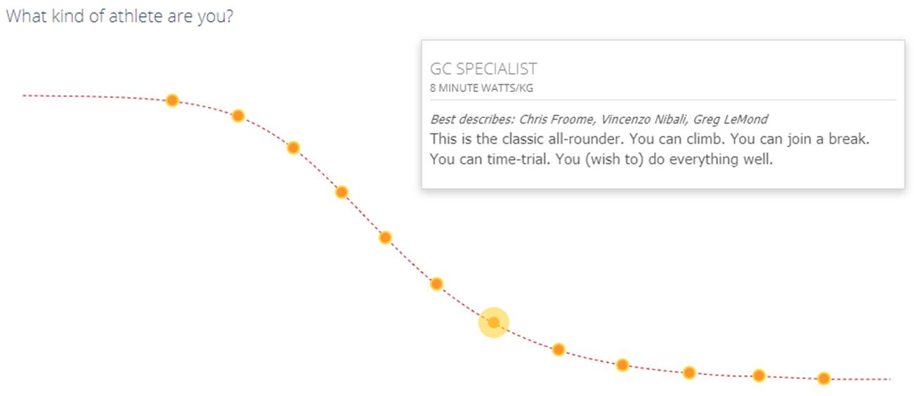
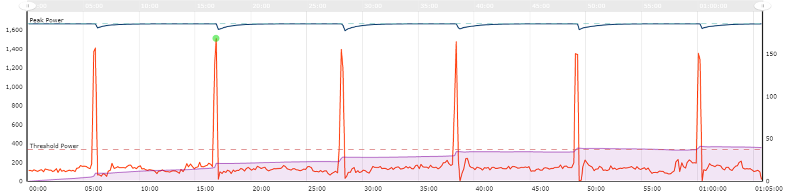
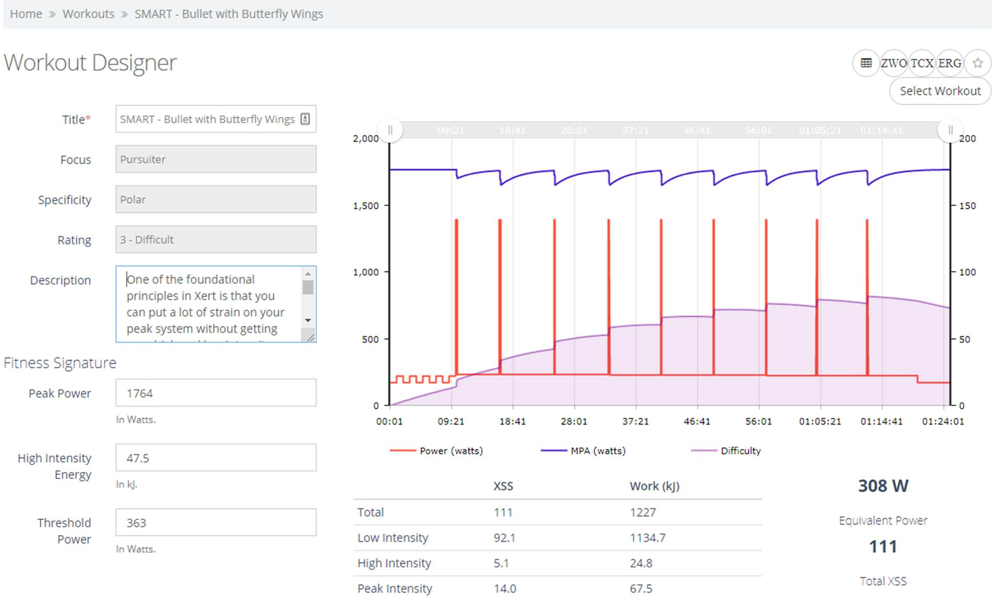
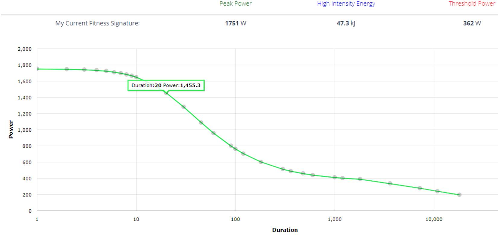
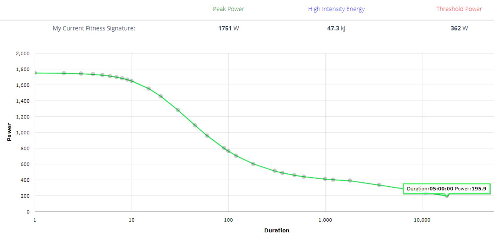

Last
updated Wed 04-Sep-2019
--- suggestions, recommendations,
requests, comments, … or just that you found it useful -> sigma.fusion at pm.me
You want to improve? Challenge yourself? Excellent, a wise decision and the
beginning of your journey, as wanting is a necessary but not a sufficient condition. You will have to WORK very hard, but
it is rewarding. I would say you can do it at any age, but would just talk to
your doctor first, and perhaps perform a full assessment and echocardiography (https://en.wikipedia.org/wiki/Echocardiography)
with a cardiologist if you have never done so.
Remember that to make this work, this is somewhat of a lifestyle choice, and
demanding only excellence can lead to failure.
Capturing, keeping and understanding your longitudinal
data...all of it
You cannot control what you do not measure, so I suggest you become a
big data scientist of sort. Do not worry, software and services to help you do
this is plentiful. First thing is that you need to start capturing your data
and put a proper methodology to ensure you can leverage it over a long time,
and while it is focusing on cycling, it can be used/integrated with other
sports (e.g. I still do a fairly bit of running). I have been capturing and
annotating data for decades now, so it is easier for me to understand what is
going on, what I am doing right/wrong, if I have specific issues (e.g. recent
cleat placement issue) because it becomes visible. I would suggest that you
standardize on a naming convention that makes sense to you, that you record as
much as you can, so that you can remember and find things in the future and be
able to leverage it.
As a naming scheme, as I have standardize on the following to quickly identify
my sessions in a list/database: EventType-Location-ID-AerobicTeAnaerobicTe-VO2Max-Load(Status)-RestingHR-FTP
[SessionType, Benefit] Comments & Highlights.
A recent example: ZC-A-421-2213-V65-L741(U)-R47-363W
[Group, Endurance] 3R 200km Steady Ride [~3.0w/kg avg] (B) Just too tired for
the whole 200
|
Event Type |
Zwift Cycling |
|
Location |
A |
|
ID |
421 |
|
Aerobic TE |
2.2 (FirstBeat) |
|
Anaerobic TE |
1.3 (FirstBeat) |
|
VO2Max |
65 (FirstBeat) |
|
Load |
741 (FirstBeat) |
|
Status |
Unproductive (FirstBeat) |
|
Resting HR |
47 (Garmin) |
|
FTP |
363W (Xert) |
|
Session Type |
Group (just a ride) |
|
Benefit |
Endurance (Xert) |
|
Comments & Highlights |
Free text, useful to search for significant events |
“Unproductive”
as I was too tired to begin with, and the overall TE is still somewhat low.
Based on my historical data, I know I “respond” somewhat badly to
these kind of sessions – i.e. lots of time for marginal (at best) gains.
While I am far from being a Garmin far, as their lack of QA (both hardware and
software) means an endless stream of bugs and defects, it is still the best
solution/ecosystem around for what follows. You need this data to give you
insights on the effectiveness of your efforts. I recommend getting a Garmin
Edge "30" series computer like the 530, 830 or 1030 (which I own), as
they implement the following:
You will need a chest-based HR monitor, as they are more reliable than
wrist-based ones (but good enough for daily activities and 24/7 HRM). The Wahoo
Tickr base model is excellent, cheaper than Garmin
equivalent and you can swap its CR2032 battery in seconds (more difficult on Garmins) when it runs out. Also, a reliable (easier said
than done) power meter if the one in your trainer is not and/or you want to
have consistent readings inside/outside - avoid Garmin's buggy/crippled Vectors
for the love of God, Shimano and SRM (subpar and pricey) and Stages
(unreliable). I suggest you check Ray's guide: https://www.dcrainmaker.com/2018/11/power-meter-buyers-2018.html
If you do buy into the whole FirstBeat metrics
philosophy, you might want also to wear a device that tracks your HR 24/7,
training load/recovery, sleep quality and any activity such as moving. I do
this with a Garmin Forerunner 935. It can last days without charging and is
very light, so it will not bother you during your sleep. Also, this will be
useful is you other sports activities (e.g. if you do a lot running, swimming)
as well to track your overall load level and recovery.
FirstBeat https://www.firstbeat.com/en/
A set of technology and products around heart monitoring from a small Finish
company that I have been using for years. They used to make standalone products
(e.g. FirstBeat Athlete - https://www.firstbeat.com/en/professional-sports/individual-athletes/) leveraging data mostly from
Polar devices and professional equipment. Now they have been licensing their IP
to companies such as Garmin, Samsung, … and I highly recommend you use
them. You can also check their white papers https://www.firstbeat.com/en/science-and-physiology/
based on longitudinal studies of Olympic athletes. The main concept they are
leveraging is HRV and RR-intervals.
Can you feel my voltage heartbeat come alive? 😊
As they say “Over 23,000 athletes
representing over 1000 teams around the world rely on Firstbeat
Sports” https://www.firstbeat.com/en/client-list/
Some papers (including beyond FirstBeat) on the
subject:
·
A
seminal paper on HRV (warning, heavy reading) “Heart rate variability: Origins, methods, and interpretive caveats”
https://onlinelibrary.wiley.com/doi/epdf/10.1111/j.1469-8986.1997.tb02140.x
·
Literature
on HRV of the Task Force of the European Society of Cardiology and the North
American Society of Pacing and Electrophysiology http://www.beam-hrv.com/files/pages/7/hrv-literaturliste.pdf
·
“Stress and Recovery Analysis Method Based on
24-hour Heart Rate Variability” https://assets.firstbeat.com/firstbeat/uploads/2015/11/Stress-and-recovery_white-paper_20145.pdf
·
“The quantification of
training load, the training response and the effect on performance” http://www.fisioex.ufpr.br/resources/BE711/BE711---Borresen-SpMed-2009.pdf
·
“The Road to Gold: Training and Peaking
Characteristics in the Year Prior to a Gold Medal Endurance Performance”
https://journals.plos.org/plosone/article/file?id=10.1371/journal.pone.0101796&type=printable
·
“Monitoring training status with
HR measures: do all roads lead to Rome?” https://www.frontiersin.org/articles/10.3389/fphys.2014.00073/full
·
You
might want to read “Understanding
Athlete Stress and Recovery” https://content.firstbeat.com/hubfs/ENG-Sports-Guide/firstbeat_understanding_athlete_stress_and_recovery_241018.pdf
·
Something more specific to FirstBeat
“EPOC Based Training Effect
Assessment” https://assets.firstbeat.com/firstbeat/uploads/2015/11/white_paper_training_effect.pdf
Xert https://www.xertonline.com/
Xert is an online training platform/data service from
Canada centered around cycling. It provides you with an adaptive
training plan, sessions targeting specific objectives - e.g. GC specialist,
climbing, sprinting - benchmarking data and many other things. Think of it as
your virtual coach, and I overall think it is superior (but also more
expensive) to TrainingPeaks, Sufferfest
et al. (which are all good solutions) because of its adaptive nature and
data-centric nature.
It keeps track on your power metrics like FTP and MPA (more on that later) in
real-time, so no more FTP tests.
It also link to Strava, so your
“toolchain” is then Zwift (with real-time data on your Edge
computer) -> Strava -> Xert
for data analysis and programme adaptation.
It is not my intention here to do a full review of Xert,
as it is a quite comprehensive solution, but to give you an idea on how to use
and leverage it using some real life examples. On the main page of your profile
you will your high-end metrics (as of 30-Apr-2019). I am using mine as an
example, as I know them best anyway. The “Pacer” strongly
correlates to FirstBeat load and recovery concepts. I
will come back to the notion of “breakthrough” in Xert later.
What the “stars” legend means. A good way to quickly see if you are
tired or not, it is seldom (if ever) wrong.
You
set your own objectives based of the type of athlete you are and/or what to
train towards to.

Other
types are available. Just a few examples, all training sessions recommendations
will adapt towards your profile type. You can of course mix and deviate from
your plan, but GC Specialist has a mix of everything of course.
The “Training Pacer” you saw above is based on your goals (mine, as
of 30-Apr-2019).
Your “ramp up” will depend on the level of aggressiveness of your
training.
What
I had (as of 29-Apr-2019) in term of training advice.
I
did a 100 km group ride with Hoppo and landed an XSS
(like TSS in TrainingPeak) of 121, just a bit short
of the 139 target set by the Xert
Pacer if I had followed the planned training ride.
Xert
also has a database to benchmark your progression. You can also filter by
age/gender or period of the year.
If
you move your mouse on a specific category, you get also additional data.
With
Xert, you can also install specific ConnectIQ fields on your Edge computer. Think of
“power” in Xert as kind of a tank of gas.
MPA =
Maximum Power Available - think of it as “snap” power like if you
were doing a deadlift)
TTE
= Time To Exhaustion - which is the length of time
that you can deliver a specific wattage level (by default 500W, can be changed)
TTR
= Time To Recovery - when you make an effort beyond
your FTP, TTE and MPA goes down and TTR up. Once your effort is finished, TTR
will go down and TTE and MPA will go up…according to your pace
Aerobic
and Anaerobic TE (Training Effect) are here the ones from FirstBeat
Here,
digging-in on the last 15 mins or so from a recent Tour of Watopia
event, you see what a “breakthrough” looks like. It means that your actual power exceeded
your MPA. Xert is powerful if you closely watch
your metrics, and really “xert” yourself
to finish the race empty…or even a bit beyond. At around 35 mins you see
me attacking on a crest 2.5 km before the finish, followed by an all-out
breakaway puncheur-style effort on a series of
“rollers” to the finish line mapped to reaching an MPA of zero. If
you can watch your Edge (might be difficult due to lack of oxygen😉), you will see it going down
in real-time. If you see it going down to zero near the finish line,
perfect…and go into full anaerobic mode until the line.
Structured training using Xert is key to your progression. If you do not know what you
are doing, follow the plan and recommendations, even if you do know, I would
strongly recommend that you have a strong 2nd look every time. Remember that
you are allowed to have fun too, and that training is
also easier in group rides, so it’s always possible to do both at the
same time. As an example, I will often do power sprint training (more in the
“training” section later) in group rides by hammering ramps full
blast for 5 to 10 secs from a very low speed. Such a training sessions will
look like this.

Which
mimics somewhat, albeit at a slower steady pace here because of the group ride,
the standalone “SMART - Bullet with Butterfly Wings” session type.
Note that you can also “export” such planned
sessions as .zwo file that you can integrate in Zwift
(for standalone training) by putting them (under Windows) in C:\Users\You\Documents\Zwift\Workouts\YourZwiftID
You
can also adjust and see additional details about your training sessions in the
“Workout Designer”.

And
how they will look like in Zwift once integrated.
There
are *MANY* sessions types, including their specificities – e.g. Pure,
Polar. The ones that were recommended to me at the time of this writing.
There’s
also a “Fitness Signature Calculator” that you can use to
estimate/planned your efforts. I find this less useful for races type of
efforts, as your power output is never linear, but it is for steady rides
and/or specific efforts.
Example
1 – you want to see what your best power on a 20 secs sprint could be.

Example
2 – I am planning a 5h 200 km ride with Hoppo
at 3W, can I survive? Barely in fact, my weak spot. ☹

Strava
http://www.stava.com
Good old Strava, I do not use it much for its social
aspects and KOMs, but mostly as a database to keep historical data. It is also
useful for additional visualization and analysis of your data using the
“Elevate” Google Chrome extension for Strava.